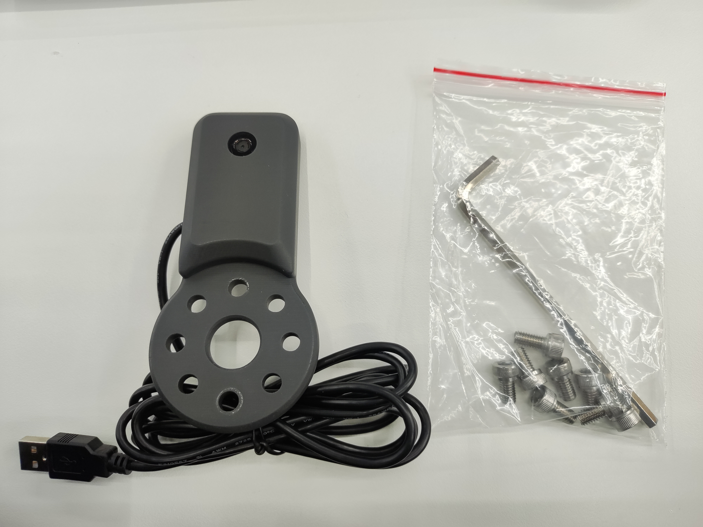
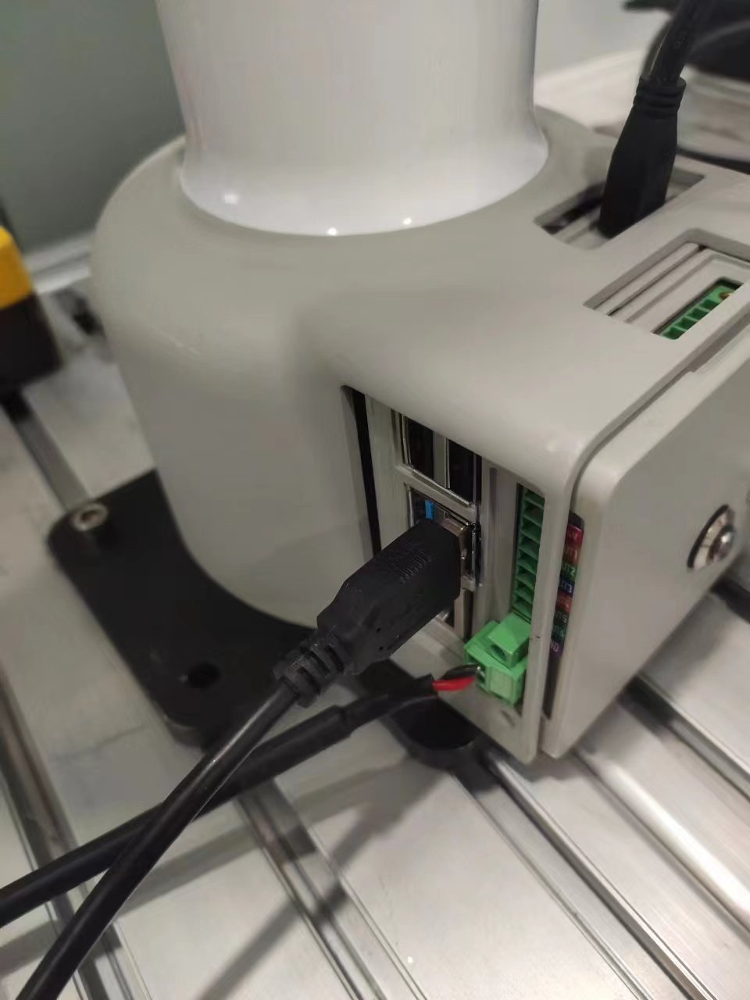
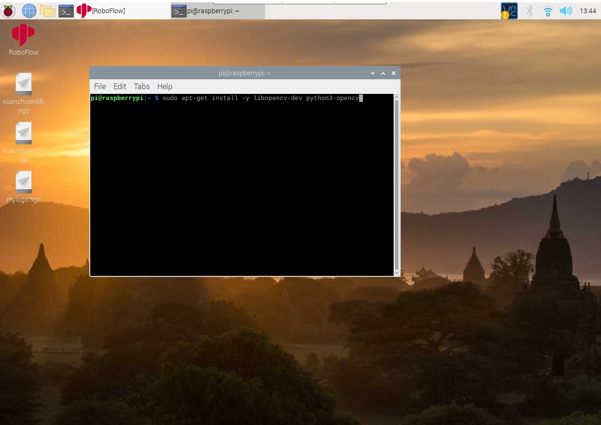
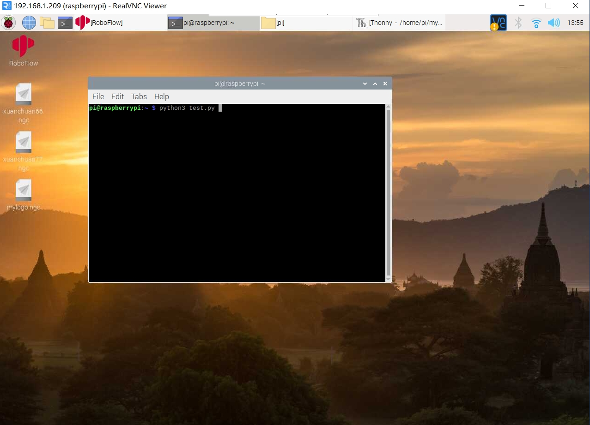

myCobotPro Camera Module
Compatible models: myCobot 320, myCobot Pro 630, myCobot Pro 600, myCobot Pro 450
Product Images

Specifications:
| Name | myCobotPro camera module |
|---|---|
| Model | myCobot_Pro_cameraHolder_J6 |
| Material | Photosensitive resin |
| USB protocol | USB2.0 HS/FS |
| Lens focal length | Standard 1.7mm |
| Field of view | About 60° |
| Supported systems | Win7/8/10, Linux, MAC |
| Fixing method | Screw fixing |
| Operating environment requirements | Normal temperature and pressure |
| Applicable equipment | myCobot 320, myCobot Pro 600, myCobot Pro 630, myCobot Pro 450 |
Camera flange: Machine vision
Introduction
- USB high-definition camera can be used with suction pump, adaptive gripper, artificial intelligence kit, etc., to achieve precise positioning and calibration with eye in hand.
Installation and Use
- Check if the accessories package is complete: screws and hex wrench, camera module with USB cable

Camera installation:
Structural installation:
Align the camera module with the end of the robot arm according to the required direction, and tighten the screws with the hex wrench
Electrical connection:
Plug the USB cable into the USB port of the base:

Python Programming Control
Enter the robot system, open the terminal and enter the following command to install opencv
sudo apt-get install -y libopencv-dev python3-opencv

Create a new python file and fill in the following code
#encoding=utf-8
import cv2
import numpy as np
cap = cv2.VideoCapture(0)
while(True):
ret, frame = cap.read()
cv2.imshow('frame', frame)
# Press 'q' to exit
if cv2.waitKey(1) & 0xFF == ord('q'):
break
cap.release()
cv2.destroyAllWindows()
Then use python3 in the terminal Run the newly created python file
